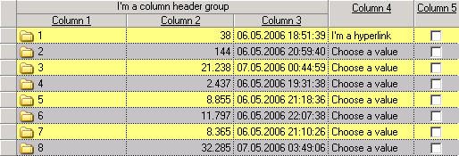

MTblSetAltRowBackColors
bOk = MTblSetAltRowBackColors( hWndTbl, bSplitRows, nColor1, nColor2 )
Sets alternating row background colors of normal or split rows.
Parameters
hWndTbl
Window Handle: Handle of the table
bSplitRows
Boolean: If TRUE, the alternating colors of split rows are set, otherwise the alternating colors of normal rows are set.
nColor1
Number: First color. Specify MTBL_COLOR_UNDEF to leave the color undefined.
nColor2
Number: Second color. Specify MTBL_COLOR_UNDEF to leave the color undefined.
Return
Boolean: TRUE if successful or FALSE if an error occurs
Example
In this example the alternating background colors are set to yellow and green:
Call MTblSetAltRowBackColors( hWndTbl, COLOR_Yellow, COLOR_Green )
Remarks
If the table flag MTBL_FLAG_COLOR_ENTIRE_ROW is not set, the background color of rows is painted only in column cells.
Otherwise, the background color of rows is painted across the entire table.
A row background color set with MTblSetRowBackColor overrides the alternating background colors.
Example
In this example the alternating row background colors of normal rows are set to yellow and gray:
Call MTblSetAltRowBackColors( hWndTbl, FALSE, COLOR_Yellow, COLOR_Gray )
That's the result:

See also
Custom fonts and colors
Created with the Personal Edition of HelpNDoc: Free PDF documentation generator